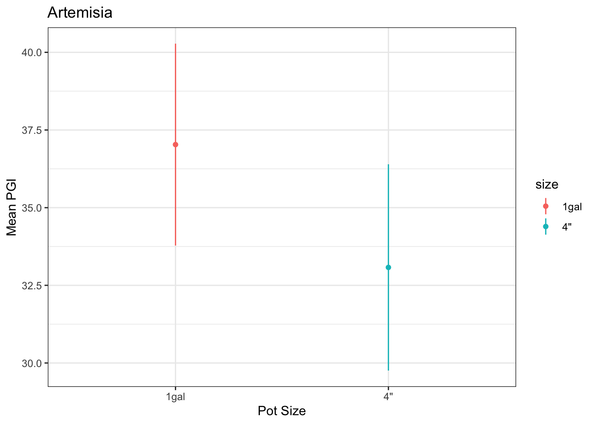
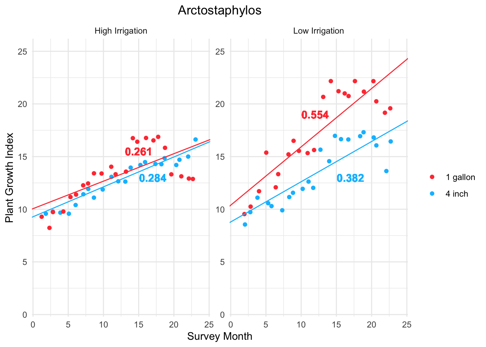
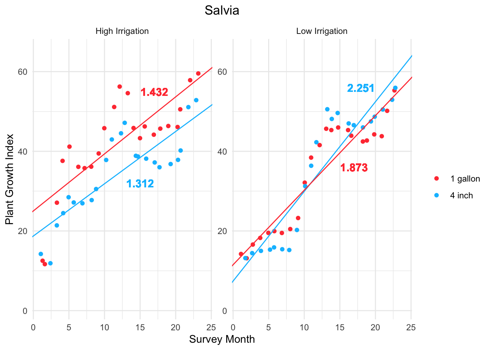

library(tidyverse) # general usagelibrary(here) # organizationlibrary(plotly) # interactive plotslibrary(skimr) # quick glimpses at datalibrary(naniar) # visualizing missing datalibrary(magick) # inserting images into plotslibrary(NatParksPalettes) # one example of color palette packagelibrary(patchwork) # putting plots togetherlibrary(GGally)library(ggeffects)library(flextable) library(car)library(broom)library(corrplot)
Code
# reading in data#delete "Plant-Trial-main" to renderpet_data <-read.csv(here("data", "plantcodefinal.csv"))appearance <-read.csv(here("data", "Appearance.csv"))mortality <-read.csv(here("data", "mortality.csv"))# cleaning data for analysispet_data_clean <- pet_data %>%filter(irrigation %in%c("high", "low"))sp_labels <-labeller(species =c(arcto ="Arctostaphylos",arte ="Artemisia",ceo ="Ceanothus",dip ="Diplacus",salvia ="Salvia"))month_labels <-c("May", "Jun", "Jul", "Aug", "Sept", "Oct", "Nov", "Dec", "Jan", "Feb", "Mar", "Apr", "May", "Jun", "Aug", "Sept", "Oct", "Nov", "Dec", "Jan", "Feb", "Mar", "Apr")selected_breaks <-c(2, 6, 10, 14, 18, 22)# Define the corresponding labels for these breaksselected_labels <- month_labels[selected_breaks]
# anovas for arcto size and irrigation arcto_irr_anova <-aov(growth_rate ~ irrigation, data = arcto) arcto_size_anova <-aov(growth_rate ~ size, data = arcto)summary(arcto_irr_anova)
Df Sum Sq Mean Sq F value Pr(>F)
irrigation 1 117.3 117.30 10.79 0.00145 **
Residuals 90 978.1 10.87
---
Signif. codes: 0 '***' 0.001 '**' 0.01 '*' 0.05 '.' 0.1 ' ' 1
Code
summary(arcto_size_anova)
Df Sum Sq Mean Sq F value Pr(>F)
size 1 99.3 99.28 8.969 0.00355 **
Residuals 90 996.2 11.07
---
Signif. codes: 0 '***' 0.001 '**' 0.01 '*' 0.05 '.' 0.1 ' ' 1
We can see that the Acrtostaphylos in the low irrigation plot had a significantly higher mean plant growth index than those in the high irrigation plot. The Acrtostaphylos which started in 1 gallon pots had a significantly higher mean plant growth index than those started in 4 inch pots.
Artemisia Mean Plant Growth Index by Pot Size and Irrigation
Code
# isolated arte mean PGI by irrigationarte_irrigation <- arte %>%group_by(irrigation) %>%summarize(mean_growth =mean(growth_rate),sd_growth =sd(growth_rate),var_growth =var(growth_rate),count_growth =length(growth_rate),se_growth = sd_growth/sqrt(count_growth),margin_growth =qt(0.95, df = count_growth -1) * se_growth)# plotting relationshipggplot(data = arte_irrigation, aes (y = mean_growth, x = irrigation, color = irrigation)) +geom_point() +geom_linerange(aes(ymin = mean_growth - margin_growth, ymax = mean_growth + margin_growth), linewidth =0.5) +labs(x ="Irrigation Level",y ="Mean PGI",title ="Artemisia") +theme_bw()
Code
# isolated arte mean PGI by pot sizearte_size <- arte %>%group_by(size) %>%summarize(mean_growth =mean(growth_rate),sd_growth =sd(growth_rate),var_growth =var(growth_rate),count_growth =length(growth_rate),se_growth = sd_growth/sqrt(count_growth),margin_growth =qt(0.95, df = count_growth -1) * se_growth)# plotting relationshipggplot(data = arte_size, aes (y = mean_growth, x = size, color = size)) +geom_point() +geom_linerange(aes(ymin = mean_growth - margin_growth, ymax = mean_growth + margin_growth), linewidth =0.5) +labs(x ="Pot Size",y ="Mean PGI",title ="Artemisia") +theme_bw()

Code
# anovas for arte size and irrigation arte_irr_anova <-aov(growth_rate ~ irrigation, data = arte) arte_size_anova <-aov(growth_rate ~ size, data = arte)summary(arte_irr_anova)
Df Sum Sq Mean Sq F value Pr(>F)
irrigation 1 75 74.75 0.417 0.52
Residuals 90 16121 179.12
Code
summary(arte_size_anova)
Df Sum Sq Mean Sq F value Pr(>F)
size 1 360 359.5 2.043 0.156
Residuals 90 15836 176.0
We can see there is no significant difference in the mean growth rate between pot size or irrigation level for Artemisia. The low irrigation and the 1 gallon plants had slightly (but not significantly) higher mean PG.
Ceanothus Mean Plant Growth Index by Pot Size and Irrigation
Code
# isolated ceo mean PGI by irrigationceo_irrigation <- ceo %>%group_by(irrigation) %>%summarize(mean_growth =mean(growth_rate),sd_growth =sd(growth_rate),var_growth =var(growth_rate),count_growth =length(growth_rate),se_growth = sd_growth/sqrt(count_growth),margin_growth =qt(0.95, df = count_growth -1) * se_growth)# plotting relationshipggplot(data = ceo_irrigation, aes (y = mean_growth, x = irrigation, color = irrigation)) +geom_point() +geom_linerange(aes(ymin = mean_growth - margin_growth, ymax = mean_growth + margin_growth), linewidth =0.5) +labs(x ="Irrigation Level",y ="Mean PGI",title ="Ceanothus") +theme_bw()
Code
# isolated arte mean PGI by pot sizeceo_size <- ceo %>%group_by(size) %>%summarize(mean_growth =mean(growth_rate),sd_growth =sd(growth_rate),var_growth =var(growth_rate),count_growth =length(growth_rate),se_growth = sd_growth/sqrt(count_growth),margin_growth =qt(0.95, df = count_growth -1) * se_growth)# plotting relationshipggplot(data = ceo_size, aes (y = mean_growth, x = size, color = size)) +geom_point() +geom_linerange(aes(ymin = mean_growth - margin_growth, ymax = mean_growth + margin_growth), linewidth =0.5) +labs(x ="Pot Size",y ="Mean PGI",title ="Ceanothus") +theme_bw()
Code
# anovas for ceo size and irrigation ceo_irr_anova <-aov(growth_rate ~ irrigation, data = ceo) ceo_size_anova <-aov(growth_rate ~ size, data = ceo)summary(ceo_irr_anova)
Df Sum Sq Mean Sq F value Pr(>F)
irrigation 1 289 289.41 6.443 0.0129 *
Residuals 90 4043 44.92
---
Signif. codes: 0 '***' 0.001 '**' 0.01 '*' 0.05 '.' 0.1 ' ' 1
Code
summary(ceo_size_anova)
Df Sum Sq Mean Sq F value Pr(>F)
size 1 113 112.59 2.401 0.125
Residuals 90 4220 46.88
We can see that the Ceanothus in the high irrigation plot had a significantly larger mean plant growth index than those in the low irrigation plot. There was no significant difference between Ceanothus in 1 gallon and 4 inch pots, however the 1 gallon Ceanothus mean PGI was slightly higher.
Diplacus Mean Plant Growth Index by Pot Size and Irrigation
# anovas for dip size and irrigation dip_irrigation_anova <-aov(growth_rate ~ irrigation, data = dip) dip_size_anova <-aov(growth_rate ~ size, data = dip)summary(dip_irrigation_anova)
Df Sum Sq Mean Sq F value Pr(>F)
irrigation 1 28 28.35 0.733 0.394
Residuals 90 3480 38.67
Code
summary(dip_size_anova)
Df Sum Sq Mean Sq F value Pr(>F)
size 1 29 28.76 0.744 0.391
Residuals 90 3480 38.66
We can see that there is no significant difference in the mean PGI of Diplacus planted in the low and high level irrigation plots, or between those started in 1 gallon and 4 inch pots.
Salvia Mean Plant Growth Index by Pot Size and Irrigation
# anovas for salvia size and irrigation salvia_irrigation_anova <-aov(growth_rate ~ irrigation, data = salvia) salvia_size_anova <-aov(growth_rate ~ size, data = salvia)summary(salvia_irrigation_anova)
Df Sum Sq Mean Sq F value Pr(>F)
irrigation 1 393 392.8 2.146 0.146
Residuals 90 16471 183.0
Code
summary(salvia_size_anova)
Df Sum Sq Mean Sq F value Pr(>F)
size 1 306 306.2 1.664 0.2
Residuals 90 16558 184.0
We can see there is no significant difference in the mean growth rate between pot size or irrigation level for Salvia. The high irrigation and the 4 inch plants had slightly (but not significantly) higher mean PG.
The mean of the plant growth index flattens the data and removes the seasonal oscillations inherent this time-series data. We can also look at the growth rate of each treatment by taking the slope of the line representing the PGI over time. This serves to visualize the inches of growth per month for each species.
#creating a plot of growth rate by irrigation# split by irrigationggplot(data = arcto, aes(x = surv_month, y = growth_rate)) +geom_jitter(aes(color = size), na.rm =TRUE) +theme_minimal() +theme(plot.title =element_text(hjust =0.5))+labs(title ="Arctostaphylos")+facet_wrap(~irrigation, scales ="free", labeller = irr_labels) +scale_x_continuous(name ="Survey Month", limits =c(1, 24)) +scale_y_continuous(name ="Plant Growth Index", limits =c(1, 25))+scale_color_manual(values =c("brown1", "deepskyblue"),name =" ",labels =c("1 gallon", "4 inch")) +# adding slope lines# high irr 1 galgeom_abline(data =subset(arcto, irrigation =="high"), aes(slope=0.261, intercept=10.056), color ="brown1") +# high irr 4 ingeom_abline(data =subset(arcto, irrigation =="high"), aes(slope=0.284, intercept=9.285), color ="deepskyblue")+# low irr 4 ingeom_abline(data =subset(arcto, irrigation =="low"), aes(slope=0.382, intercept=8.794), color ="deepskyblue")+# low irr 1 galgeom_abline(data =subset(arcto, irrigation =="low"), aes(slope=0.554, intercept=10.385), color ="brown1")+# adding slope labels# low irr 1 galgeom_text(data =subset(arcto, irrigation =="low"), aes(x =12, y =19, label ="0.554"), color ="brown1", size =4, fontface ="bold")+# low irr 4 ingeom_text(data =subset(arcto, irrigation =="low"), aes(x =17, y =13, label ="0.382"), color ="deepskyblue", size =4, fontface ="bold")+# high irr 1 galgeom_text(data =subset(arcto, irrigation =="high"), aes(x =15, y =15.5, label ="0.261"), color ="brown1", size =4, fontface ="bold") +# high irr 4 ingeom_text(data =subset(arcto, irrigation =="high"), aes(x =17, y =13, label ="0.284"), color ="deepskyblue", size =4, fontface ="bold")

We can see that the plants in the low irrigation plot had the highest growth rate (PGI/time).
Artemisia Growth Rate
Code
#creating a plot of growth rate by irrigation# split by irrigationggplot(data = arte, aes(x = surv_month, y = growth_rate)) +geom_jitter(aes(color = size), na.rm =TRUE) +theme_minimal() +theme(plot.title =element_text(hjust =0.5))+labs(title ="Artemisia")+facet_wrap(~irrigation, scales ="free", labeller = irr_labels) +scale_x_continuous(name ="Survey Month", limits =c(1, 24)) +scale_y_continuous(name ="Plant Growth Index", limits =c(1, 65))+scale_color_manual(values =c("brown1", "deepskyblue"),name =" ",labels =c("1 gallon", "4 inch"))+# adding slope lines# high irr 1 galgeom_abline(data =subset(arte, irrigation =="high"), aes(slope=1.68335, intercept=17.28893), color ="brown1") +# high irr 4 ingeom_abline(data =subset(arte, irrigation =="high"), aes(slope =1.664921, intercept=10.83617), color ="deepskyblue")+# low irr 4 ingeom_abline(data =subset(arte, irrigation =="low"), aes(slope =1.992367, intercept=11.42986), color ="deepskyblue")+# low irr 1 galgeom_abline(data =subset(arte, irrigation =="low"), aes(slope =1.940563, intercept=13.28498), color ="brown1") +# adding slope labels# low irr 1 galgeom_text(data =subset(arcto, irrigation =="low"), aes(x =19, y =58, label ="1.941"), color ="brown1", size =4, fontface ="bold")+# low irr 4 ingeom_text(data =subset(arte, irrigation =="low"), aes(x =17, y =35, label ="1.992"), color ="deepskyblue", size =4, fontface ="bold")+# high irr 1 galgeom_text(data =subset(arte, irrigation =="high"), aes(x =18, y =55, label ="1.683"), color ="brown1", size =4, fontface ="bold") +# high irr 4 ingeom_text(data =subset(arte, irrigation =="high"), aes(x =17, y =33, label ="1.665"), color ="deepskyblue", size =4, fontface ="bold")
We can see that the plants in the low irrigation plot had a higher growth rate than those in the high irrigation plot. It’s also interesting to note that the growth rates of the pot sizes within each irrigation level are quite similar to each other, indicating that pot size had little effect on the growth rate of Artemisia.
Ceanothus Growth Rate
Code
#creating a plot of growth rate by irrigation# split by irrigationggplot(data = ceo, aes(x = surv_month, y = growth_rate)) +geom_jitter(aes(color = size), na.rm =TRUE) +theme_minimal() +theme(plot.title =element_text(hjust =0.5))+labs(title ="Ceanothus")+facet_wrap(~irrigation, scales ="free", labeller = irr_labels) +scale_x_continuous(name ="Survey Month", limits =c(1, 24)) +scale_y_continuous(name ="Plant Growth Index", limits =c(1, 40))+scale_color_manual(values =c("brown1", "deepskyblue"),name =" ",labels =c("1 gallon", "4 inch"))+# adding slope lines# high irr 1 galgeom_abline(data =subset(ceo, irrigation =="high"), aes(slope=0.858943, intercept=16.40464), color ="brown1") +# high irr 4 ingeom_abline(data =subset(ceo, irrigation =="high"), aes(slope =0.929298, intercept=15.07559), color ="deepskyblue")+# low irr 4 ingeom_abline(data =subset(ceo, irrigation =="low"), aes(slope =0.766181, intercept=11.758), color ="deepskyblue")+# low irr 1 galgeom_abline(data =subset(arcto, irrigation =="low"), aes(slope =0.999457, intercept=12.89891), color ="brown1")+# adding slope labels# low irr 1 galgeom_text(data =subset(ceo, irrigation =="low"), aes(x =19, y =36, label ="0.999"), color ="brown1", size =4, fontface ="bold")+# low irr 4 ingeom_text(data =subset(ceo, irrigation =="low"), aes(x =17, y =22, label ="0.766"), color ="deepskyblue", size =4, fontface ="bold")+# high irr 1 galgeom_text(data =subset(ceo, irrigation =="high"), aes(x =19, y =36, label ="0.859"), color ="brown1", size =4, fontface ="bold") +# high irr 4 ingeom_text(data =subset(ceo, irrigation =="high"), aes(x =17, y =27, label ="0.929"), color ="deepskyblue", size =4, fontface ="bold")
We can see that there is more variation in the Ceanothus growth rate, with the 1 gallon Ceanothus in the low irrigation plot having the highest growth rate while the 4 inch Ceanothus in the low irrigation plot have the lowest growth rate. This variation may show that 1 gallon plants preform better, especially when there is less irrigation, or it could be error due to the fact that predation on Ceanothus by deer was quite high.
Diplacus Growth Rate
Code
#creating a plot of growth rate by irrigation# split by irrigationggplot(data = dip, aes(x = surv_month, y = growth_rate)) +geom_jitter(aes(color = size), na.rm =TRUE) +theme_minimal() +theme(plot.title =element_text(hjust =0.5))+labs(title ="Diplacus")+facet_wrap(~irrigation, scales ="free", labeller = irr_labels) +scale_x_continuous(name ="Survey Month", limits =c(1, 24)) +scale_y_continuous(name ="Plant Growth Index", limits =c(1, 45))+scale_color_manual(values =c("brown1", "deepskyblue"),name =" ",labels =c("1 gallon", "4 inch"))+# adding slope lines# high irr 1 galgeom_abline(data =subset(dip, irrigation =="high"), aes(slope=0.328162, intercept=19.05336), color ="brown1") +# high irr 4 ingeom_abline(data =subset(dip, irrigation =="high"), aes(slope =0.063661067, intercept=22.19639), color ="deepskyblue")+# low irr 4 ingeom_abline(data =subset(dip, irrigation =="low"), aes(slope =1.258064, intercept=10.12307), color ="deepskyblue")+# low irr 1 galgeom_abline(data =subset(dip, irrigation =="low"), aes(slope =0.731441, intercept=14.17515), color ="brown1")+# adding slope labels# low irr 1 galgeom_text(data =subset(dip, irrigation =="low"), aes(x =17, y =23, label ="0.731"), color ="brown1", size =4, fontface ="bold")+# low irr 4 ingeom_text(data =subset(dip, irrigation =="low"), aes(x =20, y =40, label ="1.258"), color ="deepskyblue", size =4, fontface ="bold")+# high irr 1 galgeom_text(data =subset(dip, irrigation =="high"), aes(x =20, y =30, label ="0.328"), color ="brown1", size =4, fontface ="bold") +# high irr 4 ingeom_text(data =subset(dip, irrigation =="high"), aes(x =12, y =20, label ="0.064"), color ="deepskyblue", size =4, fontface ="bold")
We can see that the Diplacus in the low irrigation plot had a much higher growth rate than those in the high irrigation plot. In the low irrigation we can see that the 4 inch plants outperformed the 1 gallon plants, however the inverse is true in the high irrigation plot. This further confirms that initial pot size does not have a predictable effect on the plant’s growth.
Salvia Growth Rate
Code
#creating a plot of growth rate by irrigation# split by irrigationggplot(data = salvia, aes(x = surv_month, y = growth_rate)) +geom_jitter(aes(color = size), na.rm =TRUE) +theme_minimal() +theme(plot.title =element_text(hjust =0.5))+labs(title ="Salvia")+facet_wrap(~irrigation, scales ="free", labeller = irr_labels) +scale_x_continuous(name ="Survey Month", limits =c(1, 24)) +scale_y_continuous(name ="Plant Growth Index", limits =c(1, 65))+scale_color_manual(values =c("brown1", "deepskyblue"),name =" ",labels =c("1 gallon", "4 inch"))+# adding slope lines# high irr 1 galgeom_abline(data =subset(salvia, irrigation =="high"), aes(slope=1.432238, intercept=25.03053), color ="brown1") +# high irr 4 ingeom_abline(data =subset(salvia, irrigation =="high"), aes(slope =1.312352, intercept=18.73221), color ="deepskyblue")+# low irr 4 ingeom_abline(data =subset(salvia, irrigation =="low"), aes(slope =2.250896, intercept=7.425395), color ="deepskyblue")+# low irr 1 galgeom_abline(data =subset(salvia, irrigation =="low"), aes(slope =1.873007401, intercept=11.52011), color ="brown1")+# adding slope labels# low irr 1 galgeom_text(data =subset(salvia, irrigation =="low"), aes(x =17, y =36, label ="1.873"), color ="brown1", size =4, fontface ="bold")+# low irr 4 ingeom_text(data =subset(salvia, irrigation =="low"), aes(x =18, y =56, label ="2.251"), color ="deepskyblue", size =4, fontface ="bold")+# high irr 1 galgeom_text(data =subset(salvia, irrigation =="high"), aes(x =17, y =55, label ="1.432"), color ="brown1", size =4, fontface ="bold") +# high irr 4 ingeom_text(data =subset(salvia, irrigation =="high"), aes(x =15, y =32, label ="1.312"), color ="deepskyblue", size =4, fontface ="bold")

We can see that the Salvia in the low irrigation plot had a higher growth rate than those in the high irrigation plot.
find error in slope , find diff between averages, can report how much more low grew on avg